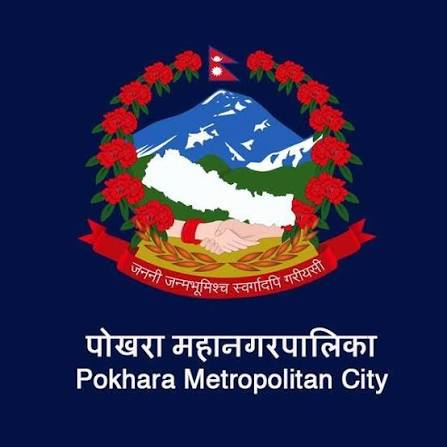

Education
Doctor of Philosophy (Ph.D.) Program in Development and Sustainability
- Course overview: Urban Environmental Management Systems; Climate Compatible and Sustainable Infrastructure Development; Development Economics; Forestry and REDD+
- PhD Dissertation Title: Identifying Hazards and Developing Resilience for Sustainable Urban Tourism: A Case Study of Pokhara, Nepal
Master of Science in Population, Gender and Development
Bachelors in Development Studies
Work Experience
Health Intervention and Technology Assessment Program Foundation
-
Principal Investigator (PI)
- Climate Change Impact on Healthcare Utilization and Health Systems
- Climate, Health and Demographic Nexus
- Economic Impact of Fossil Fuel to Renewable Energy Transition using CGE and Integrated Assessment Models
- Exposure to Microplastic, Health Impact and Economic Evaluation
- Low-Value Care: Appendicitis Surgery During COVID-19
-
Co-Principal Investigator (Co-PI)
- Indoor Air Quality Assessment of Official Buildings in Thailand
- CarbonQuest: Understanding Individual-Level Carbon Footprint via Gaming Application
-
Additional Responsibilities
- Contribute to and secure multi-source research funding, including Thailand Science Research and Innovation (TSRI) and the Wellcome Trust.
- Design and deliver research methods and statistical training.
- Develop domestic and international research partnerships focused on carbon, climate-health research, and policy integration.
-
Board Member
- Serve as an advisory board member of a climate-sensitive infectious disease network.
Asian Institute of Technology (AIT)
- Teaching Assistant: Taught Quantitative Research Methods to 50+ MSc/PhD students; achieved 100% pass rates and doubled average exam scores since 2021. Guided 100+ graduate students in data analysis and academic writing.
- Research Assistant: Ran complex projects with 200+ variables For Living Delta Hub Project.
- Student Assistant: Co-developed MSc programs in Urban Development & Sustainability; created two EbA frameworks for National University of Laos; contributed to UNEP climate finance deliverables.

United Nations Economic and Social Commission for Asia and the Pacific (ESCAP)
- Contributed to Beijing+30 synthesis across five thematic areas-informing regional policy.
- Supported Seventh Asian & Pacific Population Conference (54 member states); coordinated logistics and cross-cultural communications.
- Facilitated Working Group on the Asian & Pacific Decade of Persons with Disabilities.

Government of Nepal (GON), Pokhara Metropolitan City Office
- Implemented and maintained a comprehensive database for 650 street children and 10,000+ elderly pension recipients.
- Coordinated with 80+ civil society organizations (CSOs) to establish youth forums and ad hoc working groups.
- Collaborated directly with the Municipality Mayor and 33 ward members to institutionalize the Child-Friendly Local Governance (CFLG) program.
- Designed and executed innovative fundraising strategies, including a strategic partnership with UNICEF Nepal, securing USD 10,000.
Publications
- Sharma, N., Nitivattananon, V., Tsusaka, T. W., & Pandey, R. (2024). An Application of the Stakeholder Theory and Proactive-Reactive Disaster Management Principles to Study Climate Trends, Disaster Impacts, and Strategies for the Resilient Tourism Industry. International Journal of Sustainable Development and Planning, 19(4), 1337-1346.
- Sharma, N. (2024). Identifying Hazards and Developing Resilience for Sustainable Urban Tourism: A Case Study of Pokhara, Nepal. Doctoral Dissertation, Asian Institute of Technology, Thailand.
- Sharma, N., & Pandey, R. (2024). Examining the Environmental Sustainability of Tourism Enterprises in Lakeside, Pokhara. The Geographic Base, 10, 103-125.
- Sharma, N. (2022). Visitors' Perception on Environmental Implications of Tourism in Lakeside Pokhara, Nepal. Pokhara University.
Honors & Awards
- PhD Fellowship, University Grants Commission (UGC), Nepal (August 2022)
- Asian Institute of Technology PhD Scholarship (August 2020)
- Dean's List Award, Pokhara University (August 2019 & September 2016)
- Japan Student Services Organization (JASSO) Exchange Scholarship (Kumamoto University, Japan)
Licenses & Certifications
- Foundations of Geographic Information Systems (GIS) - LinkedIn Learning (August 2024)
- Data Analytics: Dashboards vs. Data Stories - LinkedIn Learning (August 2024)
- Machine Learning & AI Foundations: Linear Regression - LinkedIn Learning (August 2024)
- GRIH Platform Training - UNCCD G20 Global Land Initiative Coordination Office (July 2024)
- Closing the Green Skills Gap to Power a Greener Economy and Drive Sustainability - LinkedIn Learning (January 2024)
- Climate Change: A Top ESG Concern - LinkedIn Learning (January 2024)